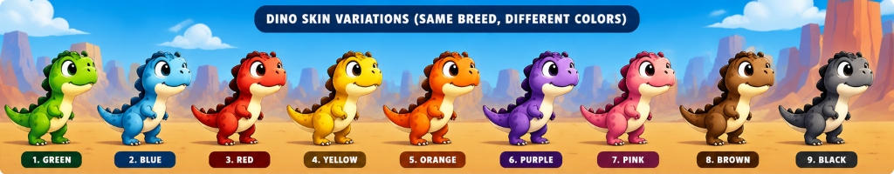

1. Canonical Master Reference (From User Sheet)

1. GREEN2. BLUE3. RED
4. YELLOW5. ORANGE6. PURPLE
7. PINK8. BROWN9. BLACK
2. Generated Recolor (dino_idle_0 with Protected Belly, Eyes, Claws)

1. GREEN2. BLUE3. RED
4. YELLOW5. ORANGE6. PURPLE
7. PINK8. BROWN9. BLACK